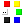

|
Save the current state of canvas into PNG file. |
 |
Clear the canvas. |
 |
Open the settings window for chosen tool. |
|
Straight line tool. |
|
Curve line tool. |
|
Fill the area with a color. |
|
Eraser tool. |
|
Drawing triangles with the chosen color and line thickness. |
|
Drawing squares with the chosen color and line thickness. |
|
Drawing pentagons with chosen color and line thickness. |
|
Drawing a custom polygon with the chosen color, number of angles, rotation angle, and line thickness. |
|
Drawing a custom star with the chosen color, number of angles, rotation angle, and line thickness. |
|  |
Five default colors for drawing: red, yellow, green, blue, and black. The last button with the name "..." opens the window with the palette. |
|
Undo the last action. The size of history of changes is 15 actions. |